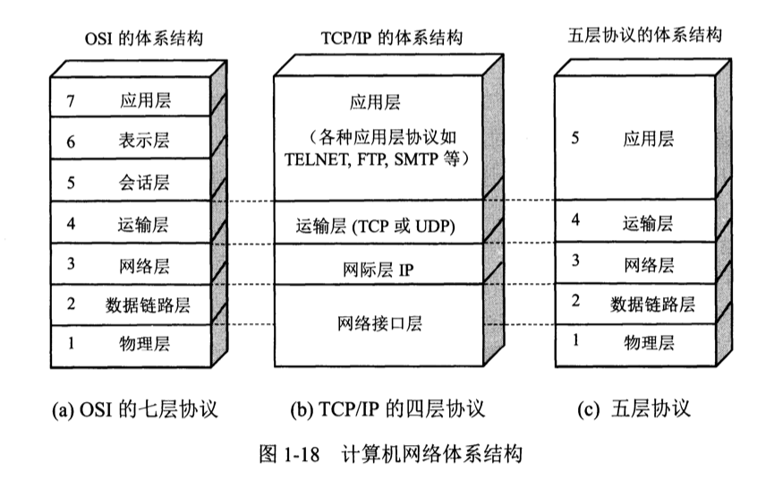
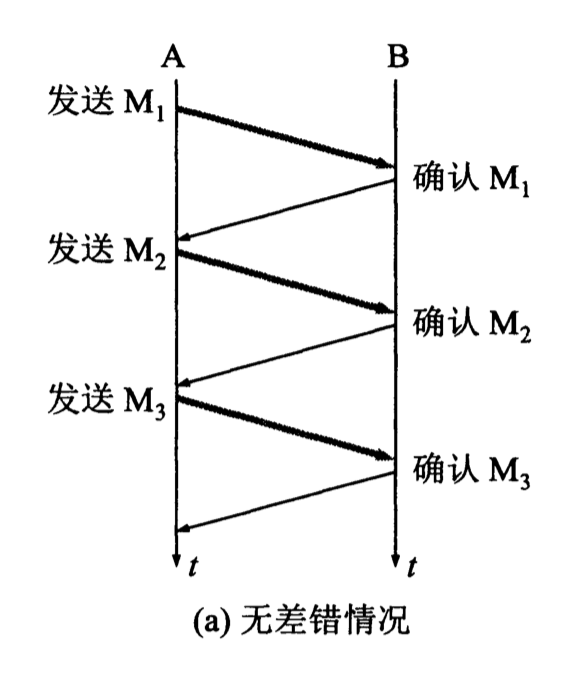
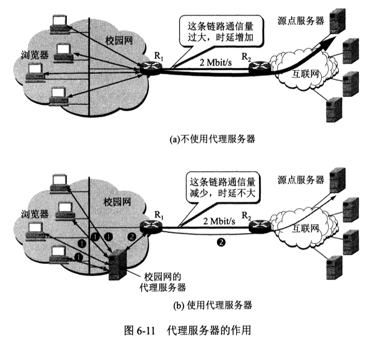

虽然学了但是总忘。在这里整理下，用来快速复习。
1 概述
计算机网络由若干结点（node）和连接这些结点的链路（link）组成。
结点：计算机、集线器、交换机或路由器等。
网络把许多计算机（主机）连接在一起；互连网通过路由器将许多网络连在一起。
ISP（Internet Server Provider）：网络服务供应商，分级为主干、地区、本地
1.3 互联网的组成
边缘（端，电脑、手机、摄像头）和核心（服务器，提供连通性）
- 边缘部分
端到端的两种通信方式：
a. C/S 连接：ClientServer 客户服务器模式；
b. 对等连接 P2P：peer-to-peer
- 核心部分
路由器（专用计算机），实现分组交换，任务时转发收到的分组。
位于网络边缘的主机和位于网络核心部分的路由器都是计算机：主机为用户处理信息，和其他主机通过网络交换信息；路由器转发分组，进行分组交换。
1.3.2 互联网的核心部分
为了理解分组交换，首先了解电路交换和报文交换。
交换（switching）是按照某种方式动态地分配传输线路的资源：电路交换，分配的是物理通道；报文交换，通道是共享的，分配的单位是报文；分组交换，分配的单位是分组。
- 电路交换
电话最早是直连，随着用户变多，直连不再可能。电话通过电路连接，让每一部电话都连接到交换机上。交换机通过交换的方法让电话用户通信。
电路交换的过程：拨号请求建立连接（专用物理通路）->通话->释放连接。这个过程中，数据突发出现，传输效率低，大部分时间空闲，比特流直达终点。
报文：message，通常我们把要发送的整块数据称为一个报文（message）。
分组（包）：packet=首部（包头，header）+数据。在每一个数据段前面，加上一些由必要的信息组成的首部（header）后，就构成了一个分组（packet）。
- 报文交换：传送的是报文。
- 分组交换：采用存储转发技术。存储转发技术：路由器收到一个分组，先暂时存储，检查首部，查找转发表，按照首部中的目的地址，找到合适的接口转发出去，把分组交给下一个路由器。这样一步一步地(可能会经过几十个不同的路由器)以存储转发的方式，把分组交付最终的目的主机。
1.5 计算机网络的类别
按作用范围分类：
- 广域网(WAN Wide Area Network)：作用范围几十到几千公里
- 城域网(MAN Metropolitan Area Network)：作用范围是城市，5 ～ 50km
- 局域网(LAN Local Area Network)：1km 左右
个人区域网(PAN Personal Area Network)：10m
按使用者分类：
- 公网：电信公司提供的，大家都能访问，花钱就可以使用。
- 私网/专用网：仅向本单位提供的，不对外开放的。
1.6 计算机网络的性能
-
速率（比特率）：传输比特的速度单位bit/s（k/M/G 度量），比如下载的速度 5M(bits)/s 2.带宽：网络传送数据的能力，是单位时间内，信道通过的最高数据率。100Mpbs100Mbpersecond。带宽一般都是秒级，表示为 range，单位赫兹；表示为 capability，单位Bps。带宽是理想值。 3.吞吐量：是网络实际传输的数据量。是指对网络、设备、端口、虚电路或其他设施，单位时间内成功地传送数据的数量（以比特、字节、分组等测量）。吞吐量是实际值。 4.时延（延迟）：delay latency.数据端到端的时间。发送时延在内部，传输时延在路上。
-
时延带宽积：传播时延*带宽。
-
往返时间 RTT：Round Trip Time.
-
利用率：
- 信道利用率：信道有百分之多少的时间是被用到的
- 网络利用率：所有信道的加权平均。
1.7 计算机网络体系结构
下面是三种网络体系结构。七层/四层/五层

osi 七层模型
物理层：IEEE802.1A 集线器
数据链路层：网络接口 交换机
网络层：IP 路由器
传输层：TCP/UDP
会话层:STMPDNS
表示层:Telnet
应用层:FTP
TCP/IP 四层模型
接口层（数据链路层（传输帧）+物理层（传输比特））
网络层:IP
传输层:TCP/UDP
应用层:DNS/HTTP/SMTP 等等
2 物理层
信道（Channel）和复用技术。
- 单工：单向
- 半双工：双方都可以发，但是不能收
- 双工：双方都可以收发
2.2 数据通信的基础知识
一个数据通信系统可划分为三大部分：
- 源系统(发送端、发送方)
- 传输系统(传输网络)
- 目的系统(接收端、接收方)。
2.2.1 数据通道系统的模型
源系统一般包括以下两个部分:
- 源点(source，源站/信源)：设备产生要传输的数据。例如，键盘输入汉字，计算机产生输出的数字比特流。源点又称为。
- 发送器：源点生成的比特流要通过发送器编码后，才能在传输系统中进行传输。比如调制器。现在很多计算机使用内置的调制解调器(包含调制器和解调器)，用户在计算机外面看不见调制解调器。
目的系统一般也包括以下两个部分:
- 接收器接收传输系统传送过来的信号，并把它转换为能够被目的设备处理的信息。典型的接收器就是解调器，它把来自传输线路上的模拟信号进行解调，提取出在发送端置入的消息，还原出发送端产生的数字比特流。
- 终点(destination)终点设备从接收器获取传送来的数字比特流，然后把信息输出(例如，把汉字在计算机屏幕上显示出来)。终点又称为目的站，或信宿。
通信的目的：传送消息(message)。消息：如话音、文字、图像、视频等都是消息。数据(data)是运送消息的实体。
信号可分为以下两大类:
(1)模拟信号（连续信号）：消息的参数的取值是连续的。比如用户家中的调制解调器到电话端局之间的用户线上传送的就是模拟信号。
(2)数字信号（离散信号）：消息的参数的取值是离散的。比如用户家中的计算机到调制解调器之间，或在电话网中继线上传送的就是数字信号。在使用时间域(或筒称为时域)的波形表示数字信号时，代表不同离散数值的基本波形就称为码元。
在使用二进制编码时，只有两种不同的码元，一种代表 0 状态，另一种代表 1 状态。
2.2.2 有关信道的几个基本概念
信道：向某一个方向传送信息的媒体，是用于传输信息的路径或介质。一条通信电路往往包含一条发送信道和一条接收信道。比如：
- 有线信道：包括双绞线、同轴电缆、光纤等。它们通常用于局域网、广域网和长距离通信。
- 无线信道：包括无线电波、微波、红外线等。它们用于移动通信、Wi-Fi、蓝牙等无线网络。
从通信的双方信息交互的方式来看，可以有以下三种基本方式:
- 单向通信（单工通信）只能有一个方向的通信，无交互。比如：无线电广播、有线电广播、电视广播
- 双向交替通信（半双工通信）双方都可以发信息，但不能同时发送，也不能同时接收。这种通信方式是一方发送另一方接收，过一段时间后可以再反过来。
- 双向同时通信（全双工通信），即通信双方可以同时收发信息。
基带信号：来自信源的信号，称为基带信号(即基本频带信号)，如音频信号、视频信号或数据。计算机输出的文字、图像文件的数据信号都属于基带信号。基带信号直接由源产生的信号，包含所有原始频率成分，往往包含有较多的低频成分，甚至有直流成分。许多信道并不能传输这种低频分量或直流分量。所以必须对基带信号进行调制(modulation)。
这里举一个例子：音乐信号的频率范围通常在 20 Hz 到 20 kHz 之间。如果直接传输，信道必须能够支持这个频率范围。
两类调制：
- 基带调制：仅对基带信号的波形进行变换，使它能够与信道相适应。这种基带调制是把数字信号转换另一种形式的数字信号，因此大家更愿意把这种过程称为编码(coding)。
- 载波调制（carrier）：把基带信号的频率范围搬移到较高的频段，并转成模拟信号，在模拟信道中传输。经过载波调制后的信号称为带通信号(即仅在一段频率范围内能够通过信道)，而使用载波的调制称为带通调制。
- 调幅(AM)即载波的振幅随基带数字信号而变化。例如，0 或 1 分别对应于无载波或有载波输出。
- 调频(FM)即载波的频率随基带数字信号而变化。例如，0 或 1 分别对应于频率尤或。
- 调相(PM)即载波的初始相位随基带数字信号而变化。例如，0 或 1 分别对应于相位 0 度或 180 度。
2.2.3 信道的极限容量
信道的极限信息传输速率 C 为
W 为信道的带宽(以 Hz 为单位)
S 为信道内所传信号的平均功率
N 为信道内部的高斯噪声功率
香农公式表明，信道的带宽或信道中的信噪比越大，信息的极限传输速率就越高
2.3 物理层下面的传输媒体
传输媒体可分为两大类：
- 导引型：电磁波被导引沿着固体媒体(铜线或光纤)传播
- 非导引型：指自由空间，在非导引型传输媒体中电磁波的传输常称为无线传输。
2.4 信道复用技术
2.4.1 频分复用、时分复用和统计时分复用
- 频分复用：用户在频带分配后，自始至终占用这个频带。
- 时分复用：所有用户在不同的时间占用同个频带宽度。通信时，复用器(multiplexer)和分用器(demultiplexer)成对使用。复用器和分用器之间的是用户共享的高速信道。
统计时分复用 STDM(StatisticTDM)是改进的时分复用，使用 STDM 帧，提高信道利用率：
STDM 帧中的时隙数小于连接在集中器上的用户数。各用户有数据之后，就发往集中器进行缓存，集中器按序依次扫描缓存，把缓存中的输入数据放入 STDM 帧中。跳过没有缓存的数据的缓存就跳过去。当一个帧的数据放满了，就发送出去。
2.4.2 波分复用
波分复用：WDM(Wave length Division Multiplexing)是光的频分复用。由于光载波的频率很高，因此习惯上用波长而不用频率来表示所使用的光载波。
2.4.3 码分复用
码分复用 CDM(Code Division Multiplexing)是另一种共享信道的方法。实际上，人们更常用的名词是码分多址 CDMA(Code Division Multiple Access)。每一个用户可以在同样的时间使用同样的频带进行通信。由于各用户使用经过特殊挑选的不同码型，因此各用户之间不会造成干扰。
3 数据链路层
数据链路层属于计算机网络的低层。
数据链路层的两种信道：
- 点对点信道：一对一的点对点通信方式。
- 广播信道：一对多的广播通信方式。广播信道上连接的主机很多，因此必须用专用的共享信道协议，协调主机的数据发送。
本章研究的是在同一个局域网中，分组怎样从一台主机传送到另一台主机，但并不经过路由器转发。
本章最重要的内容是:
(1)数据链路层的点对点信道和广播信道的特点，以及这两种信道所使用的协议(PPP 协议以及 CSMA/CD 协议)的特点。
(2)数据链路层的三个基本问题:封装成帧、透明传输和差错检测。
(3)以太网 MAC 层的硬件地址。
(4)适配器、转发器、集线器、网桥、以太网交换机的作用以及使用场合。
3.1 使用点对点信道的数据链路层
3.1.1 数据链路和帧
- 链路(link)：从结点到邻结点的物理线路(有线或无线)，中间没有交换结点。在数据通信时，通信路径一般会经过多段链路。链路是路径的组成部分。
- 数据链路(datalink)：当传送数据时，必须有一条物理线，还必须有通信协议控制数据传输。数据链路就是实现这些协议的硬件+软件。在数据链路层，规程和协议是同义语。
数据链路层把网络层交下来的数据构成帧，发送到链路上；另外把收到的帧中的数据取出并上交给网络层。在互联网中，网络层协议数据单元就是 IP 数据报(或简称数据报、分组或包)。
点对点信道的数据链路层在进行通信时的主要步骤如下:
(1)结点 A 的数据链路层把网络层交下来的 IP 数据报添加首部和尾部封装成帧。
(2)结点 A 把封装好的帧发送给结点 B 的数据链路层。
(3)若结点 B 的数据链路层收到的帧无差错，则从收到的帧中提取出 IP 数据报交给上面的网络层;否则丢弃这个帧。
3.1.2 三个基本问题
数据链路层的三个基本问题：封装成帧、透明传输和差错检测。
-
封装成帧 framing：在一段数据的前后分别添加首部和尾部（用于定界），构成一个帧。接收端收到物理层上交的比特流后，根据首部、尾部的标记，识别帧的开始和结束。帧是数据链路层的数据传送单元。
- 帧长：帧的数据部分加首部和尾部的长度。各种数据链路层协议都对帧首部和帧尾部的格式有明确的规定。每一种链路层协议都规定了传送帧的数据部分长度上限：最大传送单元 MTU(Maximum Transfer Unit)
- 帧定界：当数据是由可打印的 ASCII 码组成的文本时，帧定界可以使用特殊的帧定界符。ASCII 码中可打印的有 95 个，不可打印的控制字符有 33 个。由于使用了帧定界符，接收端就能判断收到的数据是否包含完整帧，不完整的即可丢弃。
-
透明传输：当帧由文本组成时(字符从键盘输入)，其数据部分肯定不会出现 SOH 或 EOT 这种帧定界控制字符。因此，这就是一种透明传输：不管从键盘上输入什么字符，都可以放在这样的帧中传输。
- 当数据部分是非 ASCII 码的文本文件时(如程序、图像)，如果某个字节的二进制代码恰好等于 SOH、EOT 这种控制字符，数据链路层就会错误地“找到帧的边界”，把部分帧收下，而把剩下的那部分数据丢弃，这部分找不到帧定界控制字符 SOH。
- 透明指的是：实际存在，但是对外透明。
- 字节填充（字符填充，bytestuffing、characterstuffing）：为了解决透明传输问题，需要使接收端不将“SOH”和“EOT”解释为控制字符。具体方法：发送时，在“SOH”或“EOT”前面插入转义字符“ESC”(其十六进制编码是 1B，二进制是 00011011)。接收时删除转义字符。
-
差错检测：由于现实链路的数据传输不是绝对正确的，因此传输过程中存在比特差错。
- 误码率(BER, Bit Error Rate)：在一段时间内，传错的比特占所传比特总数的比率。
- 循环冗余检验 CRC(CyclicRedundancyCheck)：如果要在数据链路层进行差错检验，就必须把数据划分为帧，每一帧都加上冗余码，然后在接收方逐帧进行差错检验。另外，循环冗余检验 CRC 差错检测，只能做到对帧的无差错接。
-
可靠传输：发送什么就收到什么。数据链路层向网络层不提供可靠传输服务。
-
传输差错：
帧丢失:收到 1、3 丢失 2；
帧重复：收到 1、2、2、3；
帧失序：收到 1、3、2。
以上三种情况都属于“传输差错”，但都不是“比特差错”。
过去 OSI 的观点：数据链路层向上提供可靠传输。因此在 CRC 检错的基础上，增加了帧编号、确认和重传机制。收到正确的帧就要向发送端发送确认。发送端在期限内若没收到对方的确认，就认为有差错，因而重传，直到收到对方确认。现在通信线路的质量已经提高，由通信链路质量不好引起差错的概率已经大大降低。因此，现在互联网就采取了区别对待的方法：对于通信质量良好的有线传输链路，数据链路层协议不使用确认和重传机制，即不要求数据链路层向上提供可靠传输的服务。如果在数据链路层传输数据时出现了差错并且需要进行改正，那么改正差错的任务就由上层协议(例如，运输层的 TCP 协议)来完成。对于通信质量较差的无线传输链路，数据链路层协议使用确认和重传机制，数据链路层向上提供可靠传输的服务。
3.3 使用广播信道的数据链路层
上面那句关于广播信道的话其实没太看懂，再补充下：广播信道是指一种通信介质或网络，在这种网络中，每个连接到该信道的主机都可以接收到其他主机发送的数据。例如，以太网（Ethernet）就是一种典型的广播信道，每个主机通过同一根物理电缆发送和接收数据。
3.3.1 局域网的数据链路层
局域网的主要特点：网络为一个单位所拥有，地理范围和站点数目有限。
局域网优点:
- 广播：一个站点可访问全网。局域网上的主机可共享连接在局域网上的各种硬件和软件资源。
- 系统易扩展：各设备的位置可灵活调整和改变。
- 系统提高了可靠性(reliability)、可用性(availability)和生存性(survivability)。
局域网可按网络拓扑分类：
星形网：由于集线器(hub)的出现和双绞线大量用于局域网中，星形以太网以及多级星形结构的以太网获得了非常广泛的应用。
环形网
总线网，各站直接连在总线上。
- 以太网的两个标准
以太网的两个标准 DIX EthernetV2 与 IEEE 的 802.3 标准只有很小的差别。
为了使数据链路层能更好地适应多种局域网标准，IEEE802 委员会就把局域网的数据链路层拆成两个子层：
逻辑链路控制 LLC(LogicalLinkControl)子层和媒体接入控制 MAC(MediumAccessControl)子层。
- 适配器 adapter 的作用
适配器用于连接计算机与外界局域网。适配器本来是在主机箱内插入的一块网络接口板(或者是在笔记本电脑中插入一块 PCMCIA 卡，个人计算机存储器卡接口适配器)。这种接入板又称为网络接口卡 NIC(Network Interface Card)或简称为“网卡”。
3.3.2 CSMA/CD 协议
CSMA/CD（Carrier Sense Multiple Access with Collision Detection，即载波监听多路访问/碰撞检测），这个协议控制以太网上帧的发送。它曾广泛用于以太网，确保多个设备可以有效地共享同一物理链路。随着网络技术的发展，CSMA/CD 协议在现代网络中几乎已经不再使用。
3.3.3 使用集线器的星形拓扑
传统以太网使用的历史：粗同轴电缆->细同轴电缆->双绞线。采用星形拓扑，星形中心为集线器（hub），可靠性非常高。双绞线以太网总是和集线器配合使用的。集线器工作在物理层。
3.3.5 以太网的 MAC 层
-
MAC 层的硬件地址
在局域网中，硬件地址又称为物理地址或 MAC 地址(因为这种地址用在 MAC 帧中)。在所有计算机系统的设计中，标识系统(identificationsystem)”都是一个核心问题。在标识系统中，地址就是识别某个系统的一个非常重要的标识符。在讨论地址问题时，很多人常常引用著名文献[SHOC78]给出的定义:“名字指出我们所要寻找的那个资源，地址指出那个资源在何处，路由告诉我们如何到达该处。”适配器每从网络上收一个 MAC 帧，就先硬件检查其中的目的地址。如果是发往本站就收下，然后再进行其他的处理，否则丢弃。“发往本站的帧”包括以下三种:
(1)单播(unicast)帧(一对一)，即收到的帧的 MAC 地址与本站的硬件地址相同。
(2)广播(broadcast)帧(一对全体)，即发送给本局域网上所有站点的帧(全 1 地址)。
(3)多播(multicast)帧(一对多)，即发送给本局域网上一部分站点的帧。 -
MAC 帧的格式
常用的以太网 MAC 帧格式有两种标准，一种是 DIXEthernetV2 标准(即以太网 V2 标准)，另一种是 IEEE 的 802.3 标准。这里只介绍使用得最多的以太网 V2 的 MAC 帧格式
3.4 扩展的以太网
3.4.1 在物理层扩展以太网
使用光纤和一对光纤调制解调器，扩展主机和集线器之间的距离。
光纤调制解调器的作用：电信号和光信号的转换。
3.4.2 在数据链路层扩展以太网
扩展以太网更常用的方法是在数据链路层进行。
最初人们使用的是网桥(bridge，一种设备)。网桥收到 MAC 帧，根据目的地址转发和过滤。网桥收帧时，并不是向所有的接口转发，而是根据目的 MAC 地址，查找网桥中的地址表，然后将该帧转发到某个接口或者丢弃(过滤)。
1990 年交换式集线器(switching hub)问世，淘汰了网桥。交换式集线器常称为以太网交换机(switch)或第二层交换机(L2switch)，强调这种交换机工作在数据链路层。
“交换机”并无准确的定义和明确的概念。著名网络专家 Perlman 认为:“交换机”应当是一个市场名词，而交换机的出现的确使数据的转发更加快速了[PERL00]。本书也使用这个广泛被接受的名词——以太网交换机。
补充一下，网桥（Bridge）和桥接（Bridging）是不同的概念：
网桥（Bridge）：一种网络设备，将两个或多个网络段连接在一起。它工作在数据链路层（第二层），通过转发数据帧来连接不同的网络段。网桥可以根据 MAC 地址来决定是否转发数据帧，从而减少网络冲突并提高网络效率。
桥接（Bridging）：一种网络技术，将多个网络段或网络设备连接在一起，使它们看起来像一个单一的网络。桥接可以通过软件或硬件实现。通过桥接，可以将不同的网络设备或网络段统一到一个逻辑网络中，方便网络管理和数据传输。
我补充记录一些
因为只见过交换机，没见过集线器，所以查了下图片，纳闷为啥集线器和交换机为啥长的那么像
ChatGPT said:
集线器和交换机都用于连接多个网络设备，作为局域网（LAN）中的中心设备。因此，它们在设计上都需要有多个端口来连接多台设备，这导致它们的外观设计相似。
另外有些文档说集线器工作在第一层（物理层）。
4 网络层
4.1 网络层提供的两种服务
传统电信网：主要提供电话服务。使用昂贵的程控交换机，通信方式面向连接，提供可靠传输给用户(电话机)。因此他们认为，计算机网络也应模仿打电话所使用的面向连接的通信方式。当两台计算机进行通信时，也应当先建立连接(在分组交换中是建立一条虚电路 VC(Virtual Circuit))，以预留双方通信所需的一切网络资源。然后双方就沿着这条虚电路发送分组。这样的分组，其首部不需要填写完整的目的主机地址，只需填写虚电路的编号(一个不大的整数)，因而减少了分组的开销。
电信网提供的端到端可靠传输的服务对电话业务无疑是很合适的，因为电信网的终端(电话机)非常简单，没有智能，也没有差错处理能力。互联网采用的设计思路：网络层向上只提供简单灵活的、无连接的、尽最大努力交付的数据报服务”。
网络在发送分组时不需要先建立连接。每一个分组(IP 数据报)独立发送，与其前后的分组无关(不编号)。网络层不提供服务质量的承诺。也就是说，所传送的分组可能出错、丢失、重复和失序(即不按序到达终点)，也不保证分组交付的时限。由于传输网络不提供端到端的可靠传输服务，这就使网络中的路由器比较简单，且价格低廉(与电信网的交换机相比较)。
两种服务：网络层提供的两种主要服务是面向连接的服务（虚电路）和无连接的服务（数据报）
4.2 网际协议 IP
网际协议 IP 是 TCP/IP 体系中两个最主要的协议之一[STEV94][COME06][FORO10]，是最重要的互联网标准协议之一。网际协议 IP 又称为 Kahn-Cerf 协议（ RobertKahn 和 VintCerf 二人共同研发）。严格来说，这里所讲的 IP 其实是 IP 的第 4 个版本，应记为 IPv4。但在讲述 IP 协议的各种原理时，往往不在 IP 后面加上版本号。在后面的 4.6 节我们再介绍较新的版本 IPv6(版本 1~3 和版本 5 都未曾使用过)。
与 IP 协议配套使用的 3 个协议:
- ARP：Address Resolution Protocol 地址解析协议 ARP
- ICMP：Internet Control Message Protocol 网际控制报文协议
- IGMP：Internet Group Management Protocol：网际组管理协议
4.2.1 虚拟互连网络
市场上总是有很多种不同性能、不同网络协议的网络，供不同的用户选用。中间设备将网络互相连接起来，根据设备所在的层次，可以有以下四种:
(1)物理层：转发器(repeater)。
(2)数据链路层：网桥或桥接器(bridge)。
(3)网络层：路由器(router)。
(4)网络层以上：网关(gateway)。补充一下：网关（Gateway） 是连接不同网络、协议或系统的设备或软件。在 OSI 模型中，网关通常工作在更高的层（如传输层或应用层），负责不同协议之间的转换。它可以将数据从一种协议转换为另一种协议，或者连接不同类型的网络，例如局域网和广域网，或者 IPv4 和 IPv6 网络。
当中间设备是转发器或网桥时，这仅仅是把一个网络扩大了，而从网络层的角度看，这仍然是一个网络，一般并不称之为网络互连。
用网关连接两个不兼容的系统需要在高层进行协议转换。网关比较复杂，目前使用得较少。（我觉得这里写的不对）因此现在我们讨论网络互连时，都是指用路由器进行网络互连和路由选择。
由于参加互连的计算机网络都使用相同的网际协议 IP(Internet Protocol)，因此可以把互连以后的计算机网络看成一个虚拟互连网络(internet)。
使用 IP 网的好处是：当 IP 网上的主机进行通信时，就好像在一个单个网络上通信一样，它们看不见互连的各网络的具体异构细节(如具体的编址方案、路由选择协议，等等)。如果在这种覆盖全球的 IP 网的上层使用 TCP 协议，那么就是现在的互联网(Internet)。
根据第 1 章中讲过的分组交换的存储转发概念：
- 主机 H 先查找自己的路由表，看目的主机是否就在本网络上。如是，则不需要经过任何路由器而是直接交付，任务就完成了。如不是，则必须把 IP 数据报发送给某个路由器(Ri)。
- Ri 查找自己的路由表后，知道应当把数据报转发给 R2 。这样一直转发下去，最后由路由器 R3 知道自己是和 H 连接在同一个网络上，不需要再使用别的路由器转发了，于是就把数据报直接交付目的主机 H2。
4.2.2 分类的 IP 地址
IP 地址的编址方法，3 个历史：
(1)分类的 IP 地址。这是最基本的编址方法，在 1981 年就通过了相应的标准协议。A 类、B 类和 C 类地址的区分已成为历史[RFC1812]。
(2)子网的划分。这是对最基本的编址方法的改进，其标准 RFC950 在 1985 年通过。
(3)构成超网。这是比较新的无分类编址方法。1993 年提出后很快就得到推广应用。
- 分类的 IP 地址：
将 IP 地址划分为若干个固定类，每一类地址都由两个固定长度的字段组。第一个字段是网络号(net-id)，它标志主机(或路由器)所连接到的网络。一个网络号在整个互联网范围内必须是唯一的。第二个字段是主机号(host-id)。因此，一个 IP 地址在整个互联网范围内是唯一的。这样设计是为了满足不同 ip 地址需求的数量。
对主机、路由器来说，IP 地址是 32 位的二进制代码。点分十进制记法(dotted decimal notation)：把 32 位的 IP 地址中的每 8 位插入一个空格(但在机器中并没有这样的空格)。
2.常用的三种类别的 IP 地址
- A 类、B 类和 C 类地址的主机号字段分别 3 个、2 个和 1 个字节长。
- D 类地址(前 4 位是 1110)用于多播(一对多通信)。我们将在 4.6 节讨论 IP 多播。
- E 类地址(前 4 位是 1111)保留为以后用。
A 类地址的网络号字段占 1 个字节，只有 7 位可供使用(该字段的第一位已固定为 0)，可指派的网络号是 126 个(即 2^8-2)。- 2 的原因：
第一：IP 地址中的全 0 表示“这个(this)”，是个保留地址，意思是“本网络”;
第二：网络号为 127(即 01111111)保留作为本地软件环回测试(loopbacktest)本主机的进程之间的通信之用。若主机发送一个目的地址为环回地址(例如 127.0.0.1)的 IP 数据报，则本主机中的协议软件就处理数据报中的数据，不会把数据报发送到任何网络。目的地址为环回地址的 IP 数据报永远不会出现在任何网络上，因为网络号为 127 的地址根本不是一个网络地址。
ABCDE 类地址不可能重合，因为类别号： A 是 0，B 是 10，C 是 110，D 是 1110，E 是 1111
IP 地址的特点：
- 网络号和主机号组成 IP 地址。像这样分 2 个级的好处：
- IP 地址管理机构只负责分配网络号，申请单位自己管理主机号。
- 路由器根据目的主机所连的网络号转发分组，不考虑目的主机号，减小路由表。
- IP 地址是标志了一台主机(或路由器)和一条链路的接口。
- 按照互联网的观点，一个网络是指：具有相同网络号 net-id 的主机的集合，因此，用转发器或网桥连接起来的若干个局域网仍为一个网络，因为这些局域网都具有同样的网络号。具有不同网络号的局域网必须使用路由器进行互连。
- 在 IP 地址中，所有分配到网络号的网络(不管大小、范围)都是平等的。所谓平等，是指互联网同等对待每一个 IP 地址。
在同一个局域网上的主机或路由器的 IP 地址中的网络号必须是一样的。
4.2.3 IP 地址与硬件地址
IP 地址是逻辑地址，Mac 地址是硬件（物理）地址。
(1)在 IP 层抽象的互联网上只能看到 IP 数据报。
(2)虽然在 IP 数据报首部有源站 IP 地址，但路由器只根据目的站的 IP 地址的网络号进行路由选择。
(3)在局域网的链路层，只能看见 MAC 帧。
(4)尽管互连在一起的网络的硬件地址体系各不相同，但 IP 层抽象的互联网却屏蔽了下层这些很复杂的细节。只要我们在网络层上讨论问题，就能够使用统一的、抽象的 IP 地址研究主机和主机或路由器之间的通信。
4.2.4 地址解析协议 ARP
ARP 的作用：从网络层使用的 IP 地址，解析出数据链路层使用的硬件地址。
RARP：逆地址解析协议，它的作用是使只知道自己硬件地址的主机能够通过 RARP 协议找出其 IP 地址。现在的 DHCP 协议(见第 6 章的 6.6 节)已经包含了 RARP 协议的功能。
每一台主机都有一个 ARP 高速缓存(ARP cache)，里面有本局域网上的各主机和路由器的 IP 地址到硬件地址的映射表，这些地址，主机目前都知道。
当主机 A 要向本局域网上的某台主机 B 发送 IP 数据报：
-
先在自己的 ARP 高速缓存中查 B 的 IP 地址。如有，就从缓存中查出 B 的硬件地址，写入 MAC 帧，通过局域网把帧发往此硬件地址。
-
查不到 B 的 IP 地址。可能 B 才入网，也可能是 A 刚通电，高速缓存还是空的。主机 A 就自动运行 ARP，然后按以下步骤找出主机 B 的硬件地址：
- ARP 进程在本局域网上广播 ARP 请求分组(具体格式可参阅[COME06]的第 23 章)。内容是:“我的 IP 地址是 209.0.0.5，硬件地址是 00-00-C0-15-AD-18。我想知道 IP 地址为 209.0.0.6 的主机的硬件地址。”
- 在本局域网上，所有主机上的 ARP 进程都收到此 ARP 请求分组。
- B 的 IP 地址与 ARP 请求分组中的地址一致，B 收下分组，并向 A 发送 ARP 响应分组(其格式见[COME06])，并写入自己的硬件地址。其余主机因为 IP 不同，所以丢弃 ARP 请求分组。注意：ARP 请求分组是广播发送的；ARP 响应分组是单播。
- 主机 A 收到 B 的 ARP 响应分组，在其 ARP 高速缓存中写入 B 的 IP 地址到硬件地址的映射。
当主机 A 向 B 发送数据报时，很可能以后不久主机 B 还要向 A 发送数据报。因而主机 B 也可能要向 A 发送 ARP 请求分组。为了减少网络上的通信量，主机 A 在发送其 ARP 请求分组时，就把自己的 IP 地址到硬件地址的映射写入 ARP 请求分组。当主机 B 收到 A 的 ARP 请求分组时，就把主机 A 的这一地址映射写入主机 B 自己的 ARP 高速缓存中。以后主机 B 向 A 发送数据报时就很方便了。
ARP 对保存在高速缓存中的每一个映射地址项目都设置生存时间(例如，10~20 分钟)。凡超过生存时间的项目就从高速缓存中删除掉。设置这个是为了防止主机有时候突然更换硬件设备，地址改变。
注意：ARP 处理的是同一个局域网上的主机或路由器的 IP 地址和硬件地址的映射。如果不在一个局域网上，也不需要知道另一个局域网上主机的硬件地址。
补充下，为啥需要 ARP：在以太网中，设备之间的通信必须通过 MAC 地址进行，因为这是在数据链路层进行寻址的方式。IP 地址用于网络层的寻址和路由。因此，ARP 作为一个桥梁协议，负责将网络层的 IP 地址映射到数据链路层的 MAC 地址，使得数据能够在同一个局域网中正确地找到目标设备。
ARP 的典型使用场景：
- 主机：
- 发送 IP 数据报到同网络的另一台主机，用 ARP 找 Mac 地址。
- 发送 IP 数据包到其他网络的主机，用 ARP 找到路由器，直接发给路由器。
- 路由器：
- 发送 IP 数据报到本网络的主机，用 ARP 找 Mac 地址
- 发送 IP 数据包到别的网络主机，用 ARP 找到路由器，发送给其他路由器。
4.2.5 IP 数据报的格式
一个 IP 数据报由首部和数据两部分组成。首部：
在 IP 层下面的每一种数据链路层协议都规定了一个数据帧中的数据字段的最大长度，这称为最大传送单元 MTU(MaximumTransferUnit)。当一个 IP 数据报封装成链路层的帧时，此数据报的总长度(即首部加上数据部分)一定不能超过下面的数据链路层所规定的 MTU 值。例如，最常用的以太网就规定其 MTU 值是 1500 字节。若所传送的数据报长度超过数据链路层的 MTU 值，就必须把过长的数据报进行分片处理。
4.2.6 IP 层转发分组的流程
每个具有网络功能的设备上都有路由表，这是个数据结构，用来确定如何转发数据包。路由表通常包含子网掩码、下一跳地址和出接口信息。
特定主机路由：指定路由器，如果途径多个路由器，每个都需要指定。
默认路由：如果一台主机连接在一个小网络上，而这个网络只用一个路由器和互联网连接。
分组转发算法:
- 解析 IP 数据报头部：得到目的主机的 IP 地址 D 和目的网络地址 N。
- 查路由表：假如 N 与此路由器直接相连，直接交付给目的主机，否则执行 3。
- 查路由表：若路由表中有特定主机路由，把数据报传给下一跳路由器，否则，执行 4。
- 查路由表：若有到达网络 N 的路由，把数据报传给下一跳路由器，否则，执行 5。
- 查路由表：如果有默认路由，把数据报传送给路由表中所指明的默认路由器，否则，执行 6。
- 报告转发分组出错。
这个章节只说怎么转发的，没说路由表怎么来的。后面会说。
4.3 划分子网和构造超网
4.3.1 划分子网
1. ip 地址从 2 级地址变成 3 级地址
ABCDE 的划分很不合理。A 类地址的主机数过于多了，浪费；另外如果不够用了要重新申请，不灵活很死板。为解决上述问题，从 1985 年起在 IP 地址中又增加了一个“ 子网号字段”，使两级 IP 地 址变成为三级 IP 地址，它能够较好地解决上述问题，并且使用起来也很灵活。这种做法叫 做划分子网(subnetting)[RFC950]，或子网寻址或子网路由选择。划分子网已成为互联网的 正式标准协议。
划分子网:
- 我拥有许多物理网络时，可划分成若干个子网(subnet)。外部网络不知道我的网络有多少个子网。我这个网络对外还是一个网络。
- 划分方法：从主机号分出若干位给子网号(subnet-id)。两级 IP 地址在本单位内部就变为三级 IP 地址:网络号+子网号+主机号。
- 其他网络发 IP 数据报给我自己网络上主机，仍然根据 IP 数据报的目的网络号找到连我的路由器。但此路由器在收到 IP 数据报后，按目的网络号和子网号找到目的子网，把 IP 数据报交付目的主机。
例子：图中表示某单位拥有一个 B 类 IP 地址，网络地址是 145.13.0.0(网络号是 145.13)。凡目的地址为 145.13.x.x 的数据报都被送到这个网络上的路由器 R1。
现把图 4-18 的网络划分为三个子网(图 4-19)。这里假定子网号占 8 位，因此增加子网号后，主机号就剩下 8 位。所划分的三个子网分别是:145.13.3.0,145.13.7.0 和 145.13.21.0。
划分子网后，整个网络对外仍表现为一个网络，网络地址仍为 145.13.0.0。但网络 145.13.0.0.上的路由器 R1 在收到外来的数据报后，再根据数据报的目的地址把它转发到相应的子网。
划分子网只是把主机号再分解了，不改原来的网络号。
2.子网掩码
从 IP 数据报的首部，看不出来源主机或目的主机所连的网络是否划分了子网。因为 IP 地址本身和数据报的首部不包含子网划分的信息。因此使用子网掩码(subnetmask)(见图 4-20)。
使用子网掩码的好处:不管有没有划分子网，只要把子网掩码和 IP 地址逐位与运算(AND)得到网络地址。这样路由器采用同样的算法处理分组。
归纳一下：
- 从外面看，网络 145.13.0.0 是 B 类网络，其子网掩码为 16 个 1 跟 16 个 0。
- 进入网络后(到路由器 R1)，看到许多网络(子网们)，其网络地址是 145.13.x.0，这些网络的子网掩码都是 24 个 1 后面跟 8 个 0。
现在互联网标准规定，所有网络必须用子网掩码，路由器的路由表必须有子网掩码。如果网络不划分子网，那么使用默认子网掩码。默认子网掩码中 1 的位置，对应着 IP 地址中的网络号。这样不用查地址的类别位，就能知道这是哪一类的 IP 地址。显然，
A 类地址的默认子网掩码是 255.0.0.0，或 OxFF000000。
B 类地址的默认子网掩码是 255.255.0.0，或 OxFFFF0000。
C 类地址的默认子网掩码是 255.255.255.0，或 OxFFFFFF00。
4.3.2 使用子网时分组的转发
划分子网后，路由表必须包含 3 项内容：目的网络地址、子网掩码和下一跳地址。
划分子网之后，路由器转发分组算法:
- 提取数据报首部：目的 IP 地址 D
- 判断能否直接交付。逐个检查与路由器直连的网络：用 D 和各网络的子网掩码进行与运算，看网络地址是否匹配，匹配就直接交付，否则 3。
- 若路由表中有目的地址为 D 的特定主机路由，则把数据报传送给路由表中所指明的下一跳路由器:否则，执行 4。
- 对路由表中的每一行(目的网络地址，子网掩码，下一跳地址)，用其中的子网掩码和 D 逐位与，结果为 N。若 N 与该行的目的网络地址匹配，则把数据报传给下一跳路由器，否则执行 5。
- 若路由表中有一个默认路由，则把数据报传送给路由表中所指明的默认路由器，否则执行 6。
- 报告转发分组出错。
子网掩码可以比如用 ifconfig 查询
4.3.3 无分类编址 CIDR (构造超网)
1. 网络前缀
划分子网缓解了困难。然而又有 3 个新的问题：
- B 类地址快分配完了
- 互联网主干网上的路由表条数急剧变多。
- IPv4 的地址要耗尽了。在 2011 年 2 月 3 日，IANA 宣布 IPV4 地址已经耗尽了。(用 IPv6 解决)
IETF 研究出了无分类编址来解决前 2 个问题。
在 1987 年，RFC1009 指明了在子网中可同时使用不同的子网掩码。使用变长子网掩码 VLSM(Variable Length Subnet Mask)提高 IP 地址资源的利用率。在 VLSM 的基础上，研究出无分类编址方法(Classless Inter-Domain Routing).
CIDR 2 个主要特点:
- 消除传统 A\B\C 及划分子网的概念，把 IP 地址划分为：网络前缀（指明网络）+主机号。是无分类的两级编址。使用“斜线记法”(slash notation)，IP 地址\网络前缀的位数，斜线记法还可以用来计算地址块的地址范围。
- 网络前缀相同的连续的 IP 地址,组成 CIDR 地址块。只要知道地址块中的任何一个地址，就可以知道的起始地址和地址数。例如，IP 地址 128.14.35.7/20，二进制表示:128.14.35.7/20=10000000000011100010 001100000111，这个地址所在的地址块中的最小地址和最大地址可以很方便地得出:
- 最小地址 128.14.32.0： 10000000000011100010 000000000000
- 量大地址 128.14.47.255： 10000000000011100010 111111111111
以上 2 个特殊地址一般不用。这个地址块一共有 2^12 个地址，可以用最小地址和网络前缀标识。例如，上面的地址块可记为 128.14.32.0/20。为了进行路由选择，CIDR 使用 32 位的地址掩码(address mask)。地址掩码由一串 1 和一串 0 组成，1 的个数就是网络前缀的长度。虽然 CIDR 不使用子网了，但由于目前仍有一些网络还使用子网划分和子网掩码，因此 CIDR 使用的地址掩码也可继续称为子网掩码。例如，/20 地址块的地址掩码是:11111111111111111111000000000000(20 个连续的 1)。斜线记法中，斜线后面的数字就是地址掩码中 1 的个数。
注意，CIDR 并没有指出子网字段。但是，如果一个单位有了 CIDR 地址块，仍然可以划分子网。这些子网也都是网络前缀+主机号组成，只不过子网的网络前缀比单位的网络前缀更长些。例如，某单位分配到地址块/20，就可以再继续划分为 8 个子网(即需要从主机号中借用 3 位来划分子网)。这时每一个子网的网络前缀就变成 23 位(原来的 20 位加上从主机号借来的 3 位)。
路由表利用 CIDR 地址块查找目的网络，称为路由聚合(route aggregation)，这缩减了路由表。路由聚合也称为构成超网(super netting)。如果不用 CIDR，在 1994 年和 1995 年，互联网的一个路由表就会超过 7 万个项目；使用了 CIDR 后，在 1996 年一个路由表的项目数才只有 3 万多个。
CIDR 记法的多种形式：
- 地址块 10.0.0.0/10 可简写为 10/10，也就是把点分十进制中低位连续的 0 省略
- 另一种简化表示方法是在网络前缀的后面加一个星号*，如：0000101000*
每一个 CIDR 地址块中的地址数一定是 2 的整数次幂。除最后几行外，CIDR 地址块都包含了多个 C 类地址(是一个 C 类地址的 2”倍，n 是整数)，这就是“构成超网”这一名词的来源。
2.最长前缀匹配
CIDR 采用了网络前缀，因此路由表也要相应改变。这时，每个条木由“网络前缀”和“下一跳地址”组成。在查找路由表时，可能会得到多个结果，应当选择哪一条路由呢?
正确的答案是：选择最长网络前缀的路由。(longest-prefix matching)，因为网络前缀越长，其地址块就越小，路由就越具体(more specific)。最长前缀匹配又称为最长匹配或最佳匹配。为了说明最长前缀匹配的概念，我们仍以前面的例子来讨论。
假定大学下属的四系希望 ISP 把数据报直接发到四系，不经过大学的路由器，但又不想改自己的 IP 地址块。因此，在 ISP 的路由器的路由表中，至少要有以下两个项目：
- 206.0.68.0/22(大学)、
- 206.0.71.128/25(四系)。
假定 ISP 收到一个数据报，其目的 IP 地址为 D=206.0.71.130。把 D 分别和路由表中这两个项目的掩码逐位相“与”(AND 操作)。将所得的逐位 AND 操作的结果按顺序写在下面。
D 和 11111111111111111111110000000000 逐位相“与”=206.0.68.0/22 匹配 D 和 11111111111111111111111110000000 逐位相“与”=206.0.71.128/25 匹配，现在同一个 IP 地址 D 可以在路由表中找到两个目的网络(大学和四系)和该地址相匹配。根据最长前缀匹配的原理，应当选择后者，把收到的数据报转发到后一个目的网络(四系)，即选择两个匹配的地址中更具体的一个。
从以上的讨论可以看出，如果 IP 地址的分配一开始就采用 CIDR，那么我们可以按网络所在的地理位置来分配地址块，这样就可大大减少路由表中的路由项目。例如，可以将世界划分为四大地区，每一地区分配一个 CIDR 地址块:
地址块 194/7(194.0.0.0 至 195.255.255.255)分配给欧洲:
地址块 198/7(198.0.0.0 至 199.255.255.255)分配给北美洲;
地址块 200/7(200.0.0.0 至 201.255.255.255)分配给中美洲和南美洲;
地址块 202/7(202.0.0.0 至 203.255.255.255)分配给亚洲和太平洋地区。上面的每一个地址块包含有约 3200 万个地址。这种分配地址的方法就使得 IP 地址与地理位置相关联。它的好处是可以大大压缩路由表中的项目数
3. 使用二叉线索查找路由表
使用 CIDR 后，由于要寻找最长前缀匹配，路由表的查找变复杂了。在路由表中必须用好的数据结构和先进的查找算法。为了有效查找，最常用的是二叉线索树，IP 地址中从左到右的比特值决定了从根节点逐层向下层延伸的路径，而二叉线索中的各个路径就代表路由表中存放的各个地址。
4.4 网际控制报文协议 ICMP
在网际层使用 ICMP(Internet Control Message Protocol，网际控制报文协议)[RFC792]
更有效地转发 IP 数据报，提高交付成功的机会。ICMP 允许主机或路由器报告差错情况和异常报告。
ICMP 是互联网标准协议，是 IP 层的协议。ICMP 报文作为 IP 层数据报的数据，加上数据报的首部，组成 IP 数据报发送出去。
4.5 互联网的路由选择协议
本节将讨论几种常用的路由选择协议，也就是要讨论路由表中的路由是怎样得出的。
4.5.2 内部网关协议 RIP
基于距离向量的路由选择协议。特点：
- 仅和相邻路由器交换信息
- 交换自己的路由表
- 定期交换路由表
4.5.4 外部网关协议 BGP
路径向量路由选择协议。
4.5.5 路由器的构成
路由器：具有多个输入端口、输出端口的专用计算机，任务是转发分组。路由器的某个输入端口收到分组，再按照目的网络，把分组从某个输出端口转发给下一跳路由器。每一跳路由器也同样处理分组，直到到达终点。
路由器的转发分组，是网络层的主要工作。
路由器结构可分为两部分：路由选择和分组转发。
路由选择的核心构件是路由选择处理机。路由选择处理机根据选定的路由选择协议，构造路由表，定期和相邻路由器交换路由信息，更新和维护路由表。关于怎样根据路由选择协议构造和更新路由表，我们已在前面的 4.5.2 至 4.5.4 节讨论过了。
分组转发部分是本节所要讨论的问题，它由 3 部分组成：交换结构、一组输入端口和一组输出端口(请注意:这里的端口就是硬件接口)。下面分别讨论每一部分的组成：
- 交换结构(switching fabric)又称为交换组织，根据转发表(forwarding table)，将从输入端口进来的分组，从输出端口转发出去。交换结构本身就是一种网络，但这种网络完全包含在路由器之中，因此交换结构可看成是“在路由器中的网络”。
注意转发和路由选择的区别：
- 转发：路由器根据转发表，把收到的 IP 数据报，从合适的端口转发走。“转发”仅仅涉及一个路由器。
- 路由选择：涉及到很多路由器，路由表是许多路由器协同工作的结果。这些路由器按照复杂的路由算法，得出整个网络的拓扑变化情况，因而能够动态地改变所选择的路由，并由此构造出整个的路由表。
将转发表和路由表用不同的数据结构实现会带来一些好处，这是因为在转发分组时，转发表的结构应当使查找过程最优化，但路由表则需要对网络拓扑变化的计算最优化。路由表总是用软件实现的，但转发表则甚至可用特殊的硬件来实现。请注意，在讨论路由选择的原理时，往往不去区分转发表和路由表的区别，而可以笼统地都使用路由表这一名词。
4.8 虚拟专用网 VPN 和 网络地址转换 NAT
4.8.1 虚拟专用网 VPN
有的主机，大部分都和本机构内的其他主机通信。假如，在某个机构内部的计算机，通信采用 TCP/IP 协议，那么这些仅在机构内使用的计算机，就可以由本机构自行分配 IP 地址。这些计算机的 IP 地址，仅在本机构有效(也就是本地地址)，不需要向互联网的管理机构申请全球唯一的 IP 地址(全球地址)。这样，节约宝贵的全球 IP 地址资源。
但是，如果随意选择 IP 地址为本地地址，可能会引起问题：例如，机构内部的某台主机，想和互联网连接，那这个本地地址可能和互联网中某个 IP 地址重合。为了解决这一问题，RFC1918 指明了专用地址(private address)，只用于内部通信。互联网中的所有路由器，对目的地址是专用地址的数据报一律不转发。
2013 年 4 月，RFC6890 全面地给出了所有特殊用途的 IPv4 地址，但三个专用地址块的指派并无变化，即
- 10.0.0.0 到 10.255.255.255(或记为 10.0.0.0/8，它又称为 24 位块)
- 172.16.0.0 到 172.31.255.255(或记为 172.16.0.0/12，它又称为 20 位块)
- 192.168.0.0 到 192.168.255.255(或记为 192.168.0.0/16，它又称为 16 位块)
上面的三个地址块分别相当于一个 A 类网络、16 个连续的 B 类网络和 256 个连续的 C 类网络。A 类地址本来早己用完了，而上面的地址 10.0.0.0 本来是分配给 ARPANET 的。由于 ARPANET 已经关闭停止运行了，因此这个地址就用作专用地址。
采用专用 IP 地址的互连网络，称为专用互联网或本地互联网、专用网。专用 IP 地址也叫做可重用地址(reusable address).
有时一个机构很大，范围很广，可能在很多个地点，甚至在全世界，为了数据交换：
- 租用电信公司的通信线路，but 租金太高，一般难于承受。
- 利用公用的互联网作为本机构各专用网之间的通信载体，这称为虚拟专用网 VPN(Virtual Private Network)。这种网络为本机构的主机内部的通信。如果必须经过公用的互联网，必须加密。
4.8.2 网络地址转换 N AT
下面讨论另一种情况：在专用网内部的一些主机，本来已经分配到了本地 IP 地址，但现在又想和互联网上的主机通信 (并不需要加密)，那么应当采取什么措施呢?
网络地址转换 NAT(Network Adress Translation)在 1994 年诞生。在专用网连接到互联网的路由器上，安装 NAT 软件。装有 NAT 软件的路由器叫做 NAT 路由器，它至少有一个有效的外部全球 IP 地址。这样，主机使用本地地址后，和外界通信时，都要在 NAT 路由器上将其本地地址转换成全球 IP 地址，才能和互联网连接。
当 NAT 路由器具有 n 个全球 IP 地址时，专用网内最多可以同时有 n 台主机接入到互联网。这个其实就是地址翻译，local 地址翻译成全球地址。
- 使用端口号的 NAT 叫：网络地址与端口号转换 NAPT(Network Address and Port Translation)
- 不使用端口号的 NAT 就叫做传统的 NAT(traditional NAT)。
5 传输层
运输层是整个网络体系结构中的关键层次之一。
- 运输层为相互通信的应用进程提供逻辑通信。
- 端口和套接字的意义。
- 无连接的 UDP 的特点。
- 面向连接的 TCP 的特点。
- 在不可靠的网络上实现可靠传输的工作原理，停止等待协议和 ARQ 协议。(6)TCP 的滑动窗口、流量控制、拥塞控制和连接管理。
5.2 UDP 协议
特点：
- 无连接
- 尽最大努力交付，不保证可靠性
- 面向报文：对应用层发下来的报文，不拆分，也不合并。保留报文的边界，照原样发送。
- 没有拥塞控制
- 支持一对一、一对多、多对多
- 首部开销小
5.2 UDP 用户数据报 首部格式
UDP 首部+UDP 数据部
首部：源端口+目的端口+长度+检验和，各 2 字节，共 8 字节。
5.3 TCP(Transmission Control Protocol)
特点：
- 面向连接：必须先连接再传输，且每条连接只有两个端。这两个端是 Socket，套接字是【IP:端口号】。
- 可靠交付：无差错、不丢失、无重复，按序到达
- 全双工通信：两方在任何时候都可以互相发送数据
- TCP 连接面向的是字节流：TCP 根据窗口大小和拥塞程度决定每个报文段有多少个字节。
过程大概如下图：
5.4 可靠传输的工作原理
5.4.1 停止等待协议
正常情况下，传完一个，收到反馈，再发下一个；
-
差错处理
如果接收端检测到错误或没收到，不发送确认。所以发送方需要设置一个超时计时器，超时就重传，超时重传需要把时间设置成大于 RTT；
超时重传时间：计算
RTT_s``RTT_D和 RTO。Karn 算法：超时重传的时间都不要，丢弃掉，但是这样如果一直重传，RTO 就一直不能更新，所以改进办法是如果重传，把 RTO 设成 2 倍。
-
确认丢失和确认迟到
确认丢失：如果 B 发给 A 的确认丢失了，等一段时间，A 重传了，B 收到超时重传的分组，丢弃原来的分组，并且发一个新的确认；
确认迟到：如果 B 发送给 A 的确认延迟了，后续同上。A 收到这个确认以后，又受到了那个迟到的确认，直接丢弃
缺点：信道利用率低。为了解决这个问题，使用流水线传输：引入 ARQ 和滑动窗口协议。
-
信道利用率
总时间为，信道利用率为，是 A 发送分组的时间，是 B 发送确认分组的时间。
5.4.2 连续 ARQ 协议
(AutomaticRepeat-reQuest，ARQ)
- 发送方：维持一个滑窗，可以把滑窗里的数据都发出去，不需要一个一个确认，每收到一个确认，就将滑窗向前移动一个分组的位置。 -接收方：累积确认，不对收到的分组逐个确认，而是确认按顺序到达的最后一个分组。
优点：不用对每个确认都保证收到；
缺点 eg: 发送了 5 个分组，但是假如接收方收到了 1245，所以下次要从 3 重传。
5.5 TCP 首部格式
报文段=首部(20+4n)+数据部[0=0,1,2,,]
首部=源端口(2)+目的端口(2)+序号(4)+确认号(4)+状态码(2)+窗口(2)+检验和(2)等等，总共 20 字节。
MSSMaximumSegmentSize:数据部分的最大长度，默认 536，应越大越好，要不然利用率低，比如首部 20 字节，数据 1 字节，浪费。
TCP 的检验和：用于发现 TCP 首部和数据在发送端到接收端之间，是否发生了变化。
5.7 流量控制
5.7.1 滑动窗口协议
点对点控制通信量
目的：避免发送方一个劲发数据而接收方来不及接受。
方法：
-
滑窗（单位是字节）：让接收方发送一个 rwnd：receivewindow
有可能发生的情况：死锁。假如接收方来不及接收数据了，他先告诉发送方，把窗口设成 0，所以发送方不发数据了，然后接收方发现又有空闲窗口了，发请求给发送方，但是请求丢失了，所以俩人都接不到也发布出去。办法：双方都设置一个持续计时器，发送探测报文段。 -
考虑到传输效率： 1.控制 MSS 的大小 2.避免一个问题：发一堆 1 字节的报文。使用 Nagle 算法，先发一个字节，收到确认后再把剩下的报文发出去。这种方法适合数据接受快，但是网速慢的情况。
TCP 可以控制报文怎么发，有三种办法：- 达到一定的大小，发出去
- 达到一定的时间，发出去
- 发送方的应用进程指定
问题 1 发送时机：策略为，先发一个，等对方发回来一个确认，再把剩下的发出去；
问题 2 接收方的缓存满了，每次只能接受一个字节，来来回回俩人都只能每次发一个字节，解决方法是：接收方等一段时间，或者等缓存出现一半空闲发出通知。
有一个滑窗，发送端发送以后，接收端确认，可能收到多个，只确认按序到达的最后一个，比如 1、2、3、5、7，则只确认 3。维持窗口的大小，为报文首部里面标注的窗口大小。
5.8 TCP 的拥塞控制
防止过多的数据注入到网络中
拥塞：对资源的需求>可用资源。主要是由数据丢弃（缓存不够大，丢弃）和数据重传（没收到信息，重传）造成的。
解决方法有四种：慢开始、拥塞避免、快重传、快恢复
cwndcongestionwindow.拥塞窗口的大小取决于网络拥挤程度，且一直动态变化，发送方让自己的发送窗口大小等于拥塞窗口。网络拥挤，窗口小，网络不拥挤，窗口大。
ssthresh:超过阈值了，用拥塞避免，否则用慢开始。
慢开始：一开始先发少一点，指数增大。
拥塞避免：到 ssthresh 之后，加法增大，每次拥塞窗口增加 1
快重传：首先要求接收方每收到一个失序的报文段就立即发出重复确认（为的是使发送方及早的知道有报文段没有到达对方）而不要等到自己发送数据时才捎带确认。发送方只要一连收到三个重复确认就应当立即重传对方尚未收到的报文段，而不必继续等待为其设置的重传计时器到期。
快恢复：如果收到三个重复确认，把慢开始门限减半，把拥塞窗口的值设置为慢开始门限减半后的值，然后开始执行拥塞避免算法。乘法减小到一半。ssthresh=cwnd/2，cwnd=1
###TCP 的运输连接管理
连接建立，数据传输，连接释放
####TCP 的连接建立
三次握手建立连接：双向连接，可同步，可互通。
补充：为什么要三次握手？
为了防止已失效的连接请求报文段突然又传送到了服务端，因而产生错误
防止这样的情况：A 发送给 B 一个请求，但是滞留了。所以 A 又重新发送了一个请求，和 B 建立了连接，发送数据后关闭。而第一个请求到达了 B，所以建立了连接，但是因为数据发送完了所以没必要再发送数据。导致一直连接的浪费。
采用“三次握手”的办法可以防止上述现象发生。例如刚才那种情况，A 不会向 B 的确认发出确认。server 由于收不到确认，就知道 client 并没有要求建立连接。”
状态码
SYN:synchronize：请求建立连接
ACK：acknowledge：表示响应。仅当 ACK=1 时 ack 字段才有效。建立 TCP 连接后，所有报文段都必须把 ACK 字段置为 1。
三次握手中的状态码：
1.A 发送 SYN
2.B 确认，发送 SYN、ACK
3.A 确认，发送 ACK
序号
seq:Sequence，序号，表明有多少数据传输给服务端。
ack：Acknowledgement：确认号。由服务端发送，表明已经收到目前的数据并且希望接受下个数据。
三次握手中的序号解释：
1.A 发送 seq=x 给 B
2.B 确认，ack=x+1 表示收到，初始化一个新的 seq=y，发送给 A
3.A 确认，ack=y+1，更新 seq=x+1，发送给 B
数据传输阶段
####TCP 的连接释放
状态码 FIN：finish：关闭连接
除上述状态码以外，还有两个：
1.PSH 表示数据传输
2.RST 表示连接重连
四次挥手的目的
因为 FIN 释放连接报文与 ACK 确认接收报文是分别由第二次和第三次"握手"传输的。
B 收到 A 发送的 FIN 状态码，表示 A 不再发送数据给 B，但是 B 还可以传输给 A。等输出完毕以后，再确认 FIN。
四次挥手的状态码发送
1.A 请求主动关闭，发送 FIN
2.B 收到，发送 ACK
3.B 持续发送数据之后，发送 ACK、FIN
4.A 收到，发送 ACK
四次挥手的序号解释
1.A 发送 seq=u
2.B 确认，ack=u+1，seq=v 3.把剩余数据传输完之后，B 发送 ack=u+1，seq=w
4.A 确认，ack=w+1，seq=u+1
为什么 A 发送完最后一个 ACK 以后还要等待 2MSL 时间？
MSL（maximumsegmentlifetime）:TheTCPstandarddefinesMSLasbeingavalueof120seconds(2minutes).
1.保证最后一个 ACK 一定传输完毕。因为如果丢失，A 关闭了，但是 B 没有关闭 2.防止和三次握手一样的报文滞留情况。如果 A 发送了一个 ACK，但是滞留了。如果没有等待，而是开始一个新的连接了，那么滞留 ACK 有可能到达新的连接。等待时间保证所有报文都传输完毕。
保活状态
（防止协议栈假死）：存在于服务端。即如果客户端突然故障死机了，那服务端那边的连接资源什么时候能释放呢？就是保活时间到了后，服务端会发送探测信息，以决定是否释放连接。
-KeepAlive 并不是 TCP 协议规范的一部分，但在几乎所有的 TCP/IP 协议栈（不管是 Linux 还是 Windows）中，都实现了 KeepAlive 功能。
6 应用层
6.1 DNS: Domain Name System
作用：IP 地址难记，别名好记。DNS 将域名转为 IP 地址。IP 地址标准，短，方便机器处理，域名变长，直接处理困难，但是方便记忆。
hosts:主机名+IP 地址
hostname 和 domain:
- In the Internet, a hostname is a domain name assigned to a host computer.
- A hostname maybe a domain name, if it is properly organized into the domain name system.
- A domain name maybe a hostname if it has been assigned to an Internet host and associated with the host's IP address.
互联网的域名系统
DNS：联机分布式数据库，大多数任务在客户机上进行解析 resolve，少量工作在域名服务器上，系统分布式，一台坏掉不影响。
过程
- 一个应用程序需要把域名解析成 IP 地址的时候，应用程序调用解析程序，并成为 DNS 的一个客户，将域名包装在 DNS 报文中，再封装在 UDP 报文中，在本地域名服务器(LDNS,13 个根域名预先配置好)上查询。 2.如果查不到，本地域名服务器作为客户，向其他域名服务器发出查询请求。
实际查询过程，eg 浏览器
- 先查本地缓存
- 操作系统查缓存
- hosts 文件
- ldns
- 查 A 文件: 记录 IP-域名对应文件
- 查 NS 文件，查二级、一级域名的 NS 文件: 记录域名和对应的 dns
- 查根，为什么是 13 个 A-M？DNS 报文最多只能放下 13 个，使用任播技术，用 IP 定位一组机器。保存 DNS 根区文件的服务器，就叫做 DNS 根域名服务器（rootnameserver）。由于早期的 DNS 查询结果是一个 512 字节的 UDP 数据包。这个包最多可以容纳 13 个服务器的地址，因此就规定全世界有 13 个根域名服务器，编号从 a.root-servers.net 一直到 m.root-servers.net。
常见 DNS 记录类型
| 类型 | 目的 |
|---|---|
| A | 地址记录，用来指定域名的 IPv4 地址，如果需要将域名指向一个 IP 地址，就需要添加 A 记录。 |
| AAAA | 用来指定主机名(或域名)对应的 IPv6 地址记录。 |
| CNAME(Canonical) | 将域名 A 指向另一个域名 B，再由另一个域名 B 提供 ip 地址，就需要添加 CNAME 记录。 |
| MX | 如果需要设置邮箱，让邮箱能够收到邮件，需要添加 MX 记录。 |
| NS | 域名服务器记录，如果需要把子域名交给其他 DNS 服务器解析，就需要添加 NS 记录。 |
| SOA | SOA 这种记录是所有区域性文件中的强制性记录。它必须是一个文件中的第一个记录。 |
| TXT | 可以写任何东西，长度限制为 255。绝大多数的 TXT 记录是用来做 SPF 记录(反垃圾邮件)。 |
;<<>>DiG9.10.6<<>>www.baidu.com
;;globaloptions:+cmd
;;Gotanswer:
;;->>HEADER<<-opcode:QUERY,status:NOERROR,id:32406
;;flags:qrrdra;QUERY:1,ANSWER:3,AUTHORITY:0,ADDITIONAL:1
;;OPTPSEUDOSECTION:
;EDNS:version:0,flags:;udp:4000
;;QUESTIONSECTION:
;www.baidu.com.INA
;;ANSWERSECTION:
www.baidu.com.138INCNAMEwww.a.shifen.com.
www.a.shifen.com.100INA180.101.49.11
www.a.shifen.com.100INA180.101.49.12
;;Querytime:24msec
;;SERVER:172.18.52.2#53(172.18.52.2)
;;WHEN:TueJan1221:04:08CST2021
;;MSGSIZErcvd:101
域名
构成：三级+二级+一级，用.分割。
.根域名
.com 顶级域名
baidu.com 二级域名
www.baidu.com三级域名
6.3 TELNET
TELNET 是一个简单的远程终端协议[RFC 854]，它也是互联网的正式标准。用户用 TELNET 就可在其所在地通过 TCP 连接注册 (即登录)到远地的另 一台主机上(使用主机 名或 IP 地址)。TELNET 能将用户的击键传到远地主机，同时也能将远地主机的输出通过 TCP 连接返回到用户屏幕。这种服务是透明的，因为用户感觉到好像键盘和显示器是直接 连在远地 主机 上。因此，TELNET 又称为终端仿真协议。
6.4 WWW World Wide Web
万维网文档驻留的地方是万维网服务器，浏览器是万维网客户端。万维网解决的四个问题：
- 怎么标志文档：url：uniform resource locator
- 用什么协议实现各种链接：HTTP
- 怎样使各种各样的文档都能呈现，并且让大家知道怎么看：HTML
- 怎么方便用户找到信息：以上内容
url:的构成<协议>://<主机>:<端口>/<路径>
uri:统一资源标识符（英語：UniformResourceIdentifier，縮寫：URI），标志资源的名字
保留符号可参考percent-encoding，如果表单中有这些符号，要进行转义。
- URL 中关于空格的编码与空格所在位置相关：空格被编码成加号+的情况只会在查询字符串部分出现，而被编码成%20 则可以出现在路径和查询字符串中。
6.4.3 HTTP 协议
默认端口 80，通常忽略。
无连接：通过 TCP 保证数据可靠性。
无状态：同一个客户第二次访问同一个服务器上的页面时，服务器的响应与第一次被访问时的相同。
连接过程：
- 网站的服务器监听来自客户端的请求
- 收到请求后，建立 TCP 连接
- 浏览器发送页面请求
- 服务器返回相应
- TCP 连接释放
页面点击到返回结果的过程：DNS 解析域名返回 IP：先查找客户端本地缓存，如果没有，则请求 DNS 服务器，直指找到根节点。
请求时间
HTTP/1.1:使用持续连接，服务器在发送响应后仍然在一段时间内保持连接。分为非流水线和流水线。
Proxy:代理服务器，把最近的请求和响应暂存在本地，当新请求到达的时候，如果代理服务器发现请求相同，就返回暂存的响应。

报文结构
请求报文和响应报文：开始行+首部行+实体主体
方法就是 GETPOSTPUTDELETE 等等
HTTP 面向的是文本，报文中的字段都是 ASCII 码，各个字段的长度都不确定。
请求报文和响应报文都是由三个部分组成：
1.请求行： -请求报文：请求行：方法（POST/GET/HEAD/PUT/OPTION/DELETE/TRACE/CONNECT），url，版本，CRLF（换行）； -响应报文：状态行：版本，状态码，短语，CRLF 2.首部行 3.数据实体：get 通常不用

报文格式
请求报文格式：
<method>
<request-URL>
<version>
这一行称为：请求行或请求的起始行
<header>
<entity-body>
响应报文格式：
<version>
<status>
<reson-phrase>
这一行称为：响应行或响应的起始行
<header>
<entity-body></entity-body></header></reson-phrase></status></version
></entity-body></header></version></request-URL
></method>
状态码：HTTP 响应的状态
1xx 表示请求已经接受
2xx 表示成功
-200
3xx 表示重定向
-302:Found:TheHyperTextTransferProtocol(HTTP)302FoundredirectstatusresponsecodeindicatesthattheresourcerequestedhasbeentemporarilymovedtotheURLgivenbytheLocationheader.
-309-399Unassigned
4xx 表示客户端错误
-400 错误语法等等
-403 服务端理解请求，但拒绝
-404 客户端请求的资源在服务端上未发现
5xx 表示服务端错误
-502 网关错误
-504 错误代表网关超时（Gatewaytimeout），是指服务器作为网关或代理，但是没有及时从上游服务器收到请求。...这通常意味着上游服务器已关闭（不响应网关/代理），而不是上游服务器和网关/代理在交换数据的协议上不一致。正常情况下，是由于被请求服务器发送超时引起。
8 互联网音视频服务
8.1 概述
音视频服务的特点：
- 信息量大
- 对时延、抖动要求高。需要缓存
类型：
- 流式存储音视频：比如电影网站
- 流式实况：直播
- 交互：电话、会议
8.2 流式存储音视频
8.2.3 RTSP real time streaming protocol
本身不传数据，而是控制协议，以客户服务器方式工作。控制：快进、暂停。
语法类似 HTTP，请求和相应都是 ASCII 码。与 HTTP 不同的是，有状态（记录初始、播放、暂停）。可以在 TCP，也可以在 UDP，不规定如何缓存。
8.3 交互式音视频
8.3.3 RTP real-time transport protocol
实时端到端，不提供质量保证。
多媒体数据->压缩->RTP 封装成 RTP 分组->交给 UDP 套接字接口->IP 层
8.3.4 RTCP RTP control protocol
RTCP 只做控制，是 RTP 的一部分，监控服务质量、音视频同步。很短，一个 UDP 包可以塞好多个。
8.3.5 H.323
IP 电话信令标准。
8.3.6 SIP
h.323 太复杂，SIP 也是 IP 电话信令标准。
补充一下：信令
**信令（Signaling）**是指在通信网络中，传输用于控制、管理和建立通信连接的信息。它与承载用户实际数据的流量不同，信令主要用于交换控制信息，以支持通信系统的正常运行。
我理解RTSP/RTCP这种都算信令。
8.4 改进尽最大努力交付的服务
8.4.1 QOS 服务质量
方法：分优先级、分组（是不是大客户）、管制和调度（万一遇到攻击等等，把信道占满了）、呼叫接纳（两个占满了，都传不了了，只能允许穿一个先）
管制：
- 平均速率：一定时间内通过的分组数量，eg:每秒 50 个分组，或者每分钟 3000 个分组。
- 峰值速率：在限定平均速率的基础上，加入峰值速率的限制，比如在上面的基础上，每秒的分组数不能超过 1000.
- 漏桶（leakybucket）:桶里一共有 b 个 token，每个分组排队拿 token，如果已经有 b 个分组拿到了 token，漏桶就停止发放。如果分组数不足 b 个，就以每秒 r 个的速率发放 token。
调度：
优先级排队：比如买服务的客户，他们的分组优先发放。
公平排队：在优先级的基础上，支持对小客户的顾及，增加 FQ(FairQueueing)。原理就是增加一个给优先级分类的分类器，把他们分成很多个组，然后轮番取分组。
加权公平排队：公平排队的问题，万一有一个很长的分组，会占用很长的时间。所以增加权重，权重高的先处理。
下面的例子就是分组 1 有 0.5 的权重，2-11 有 0.05 的权重。